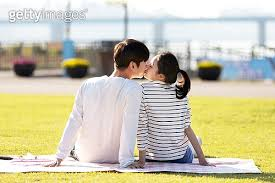
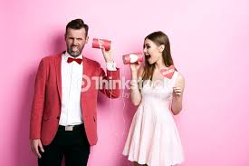

커플이 될수있는 방법

옆에 사진 처럼 되어보자!
1.
내가 마음에 드는 사람이 있다면 그사람과 대화할때 적극적인 반응을 취해준다.

위에 사진은 커플간의 의사소통을 보여주는데 의사소통을 적극적으로 함으로써
그사람이 나에게 느끼는 감정이
+
가 된다고 보장은 못하지만
-
가 될가능성은 없다고 본다.
그러므로
첫번째 방법은 의사소통 이다.
의사소통의 효과